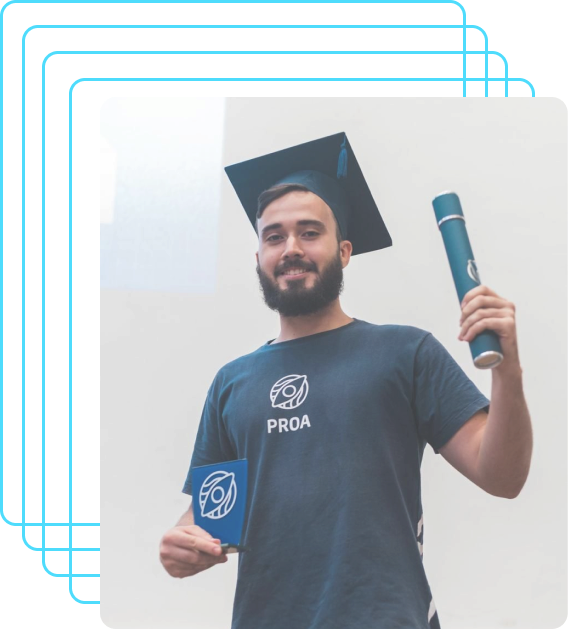

Meu início em TI cronologicamente
Primeiros contatos com Tecnologia (2019-2021)
Entrei na ETEC Professor Lucilo Ávila Pessoa, onde fiz Redes de Computadores. Lá, tive contato com hardware, testando memórias RAM, processadores e placas-mãe, e também aprendi a limpar essas peças. Além disso, fiz crimpações de cabos de rede com o alicate crimpador e testei cabos com o testador de cabos, atividades que me despertaram ainda mais para a área de TI e infraestrutura de redes.
{kind=link}
{kind=link}
Comecei na faculdade fazendo tecnólogo em ADS (set/2023-dez(2025) - em andamento)
Em 2023, entrei para o curso de Tecnólogo em Análise e Desenvolvimento de Sistemas (ADS) através do programa Embarque Digital da Prefeitura de Recife. Além das aulas, busco aprender por conta própria, explorando temas como Front-End, Back-End e arquitetura de software. Estou focado em aprimorar habilidades essenciais como lógica de programação, APIs e o desenvolvimento Full-Stack, sempre em busca de evolução constante.

Primeiros cursos aprofundados na área de programação(dez/2024)
De início eu já imaginava que existia uma vasta gama de cursos fornecidos online para a área, mas o que eu encontrei em algumas plataformas como a ALURA e a DIO foram os que me inseriram e aprofundaram um pouco mais meu conhecimento.
Como um bom pequeno gafanhoto eu também não poderia esquecer do grande professor que é o Gustavo Guanabara. Ele explica tudo para quem pega do zero mesmo. Também estudei algumas coisas, mais do hardware com o Professor Ramos do youtube, o DevDojo é o que estou vendo agora porque ele fez uma playlist imensa de Java e eu sonho em dominar essa linguagem. Sou feliz pelo que estou buscando ser e não vou parar por aqui, saber que sou melhor que ontem a cada dia me impulsiona mais e mais.
Cursei o PROPROFISSÃO Recife - Programa do PROA + Senac (jul/2024-dez/2024)
Durante 6 meses tive a oportunidade de cursar um programa que me forneceu conhecimentos técnicos e como pessoa também. Tive contato com as linguagens de programação: Java, JS e Python
bem como os frameworks: React, Node JS e Spring
Tivemos aulas extracurriculares de oratória, que nos ajudaram a apresentar o trabalho e levar para casa o título de melhor projeto demoday de 2023.2 proprofissão Recife-PE
Também tive a graça e honra de ser nomeado por meus colegas como o orador da turma ao lado de minha amiga Valleska Souza

MEUS PROJETOS
N NaveGuard
NaveGuard é uma plataforma educacional projetada para ensinar crianças sobre segurança online, privacidade digital e comportamento responsável na internet. A plataforma inclui jogos interativos, quizzes e simulações para demonstrar as consequências de diferentes comportamentos online. Este repositório contém o front-end da plataforma NaveGuard, responsável pelas telas intuitivas e dinâmicas, onde os usuários podem se registrar, fazer login e acessar gráficos, cards e mapas interativos.
Link para o projeto: Naveguard